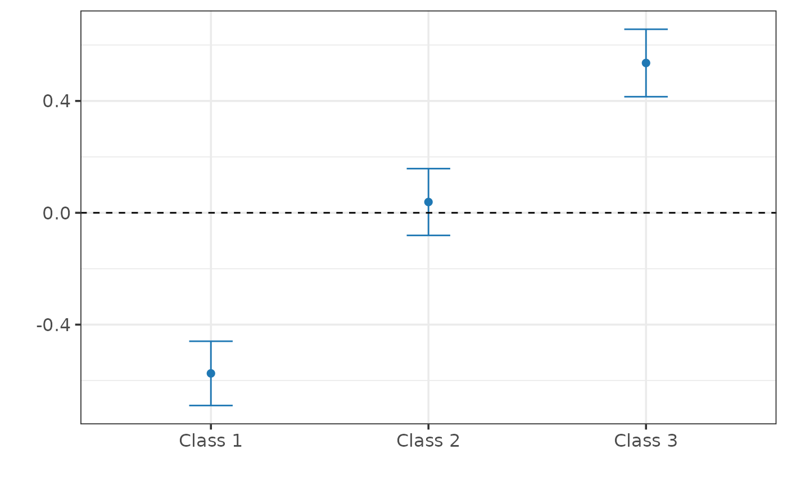

causalQual_soo.RdConstruct and average doubly robust scores for qualitative outcomes to estimate the probabilities of shift.
causalQual_soo(Y, D, X, outcome_type, K = 5)Qualitative outcome. Must be labeled as \(\{1, 2, \dots\}\).
Binary treatment indicator.
Covariate matrix (no intercept).
String controlling the outcome type. Must be either "multinomial" or "ordered". Affects estimation of conditional class probabilities.
Number of folds for nuisance functions estimation.
An object of class causalQual.
Under a selection-on-observables design, identification requires the treatment indicator to be (conditionally) independent of potential outcomes (unconfoundedness), and that each unit has a non-zero probability of being treated (common support). If these assumptions hold, we can recover the probabilities of shift of all classes:
$$\delta_m := P(Y_i(1) = m) - P(Y_i(0) = m), \, m = 1, \dots, M.$$
causalQual_soo constructs and averages doubly robust scores for qualitative outcomes
to estimate \(\delta_m\). For each class \(m\), the doubly robust score for unit \(i\) is defined as:
$$ \hat{\Gamma}_{m, i} = \hat{P}(Y_i = m \mid D_i = 1, X_i) - \hat{P}(Y_i = m \mid D_i = 0, X_i) + $$ $$ D_i \frac{1\{Y_i = m\} - \hat{P}(Y_i = m \mid D_i = 1, X_i)} {\hat{P}(D_i = 1 | X_i)} - (1 - D_i) \frac{1\{Y_i = m\} - \hat{P}(Y_i = m \mid D_i = 0, X_i)} {1 - \hat{P}(D_i = 1 | X_i)}. $$
The estimator for \(\delta_m\) is then the average of the scores:
$$\hat{\delta}_m = \frac{1}{n} \sum_{i=1}^{n} \hat{\Gamma}_{m, i},$$
with its variance estimated as: $$ \widehat{\text{Var}} ( \hat{\delta}_m ) = \frac{1}{n} \sum_{i=1}^{n} ( \hat{\Gamma}_{m, i} - \hat{\delta}_m )^2. $$
causalQual_soo uses these estimates to construct confidence intervals based on conventional normal approximations.
If outcome_type == "multinomial", \(\hat{P}(Y_i = m \mid D_i = 1, X_i)\) and \(\hat{P}(Y_i = m \mid D_i = 0, X_i)\) are estimated using a multinomial_ml strategy with regression forests
as base learners. Else, if outcome_type == "ordered", \(\hat{P}(Y_i = m \mid D_i = 1, X_i)\) and \(\hat{P}(Y_i = m \mid D_i = 0, X_i)\) are estimated using the honest version of the ocf estimator.
\(\hat{P}(D_i = 1 | X_i)\) is always estimated via a honest regression_forest. K-fold cross-fitting is employed for the estimation of all these functions.
Folds are created by random split. If some class of Y is not observed in one or more folds for one or both treatment groups, a new random partition is performed. This process is repeat until when all
classes are observed in all folds and for all treatment groups up to 1000 times, after which the routine raises an error.
## Generate synthetic data.
set.seed(1986)
data <- generate_qualitative_data_soo(1000, assignment = "observational",
outcome_type = "ordered")
Y <- data$Y
D <- data$D
X <- data$X
# Estimate probabilities of shift.
fit <- causalQual_soo(Y, D, X, outcome_type = "ordered", K = 2)
summary(fit)
#>
#> ── CAUSAL INFERENCE FOR QUALITATIVE OUTCOMES ───────────────────────────────────
#>
#> ── Research design ──
#>
#> Identification: Selection-on-Observables
#> Estimand: Probability Shifts
#> Outcome type: ordered
#> Classes: 1 2 3
#> N. units: 1000
#> Fraction treated units: 0.516
#>
#> ── Point estimates and 95\% confidence intervals ──
#>
#> Class 1: -0.556 [-0.614, -0.498]
#> Class 2: -0.036 [-0.096, 0.025]
#> Class 3: 0.592 [ 0.538, 0.646]
plot(fit)
